Regression
Regression
Overview
Linear regression predicts a number, such as a planet's mass, by finding the straight line (or, with several predictors, the flat surface) that keeps the total squared error between its predictions and the actual values as small as possible. Each predictor gets a coefficient that says how much the prediction changes when that predictor rises by one unit and the others stay fixed. Logistic regression predicts a category instead, here habitable or not habitable. It still builds a linear score from the predictors, but passes that score z through the sigmoid, p = 1 / (1 + e-z), which squeezes any number into a probability between 0 and 1. The probability becomes a class by comparing it to a threshold, usually 0.5, so a positive score means class 1 and a negative score means class 0. A straight line fitted to yes/no labels would predict values below 0 and above 1, which is why logistic regression is used for classification.
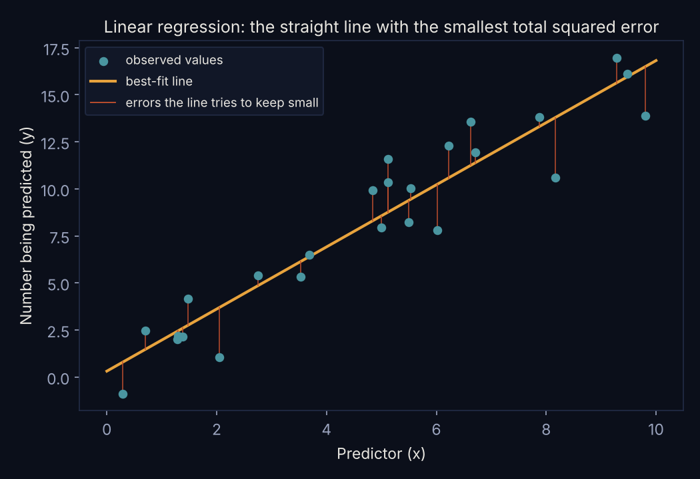
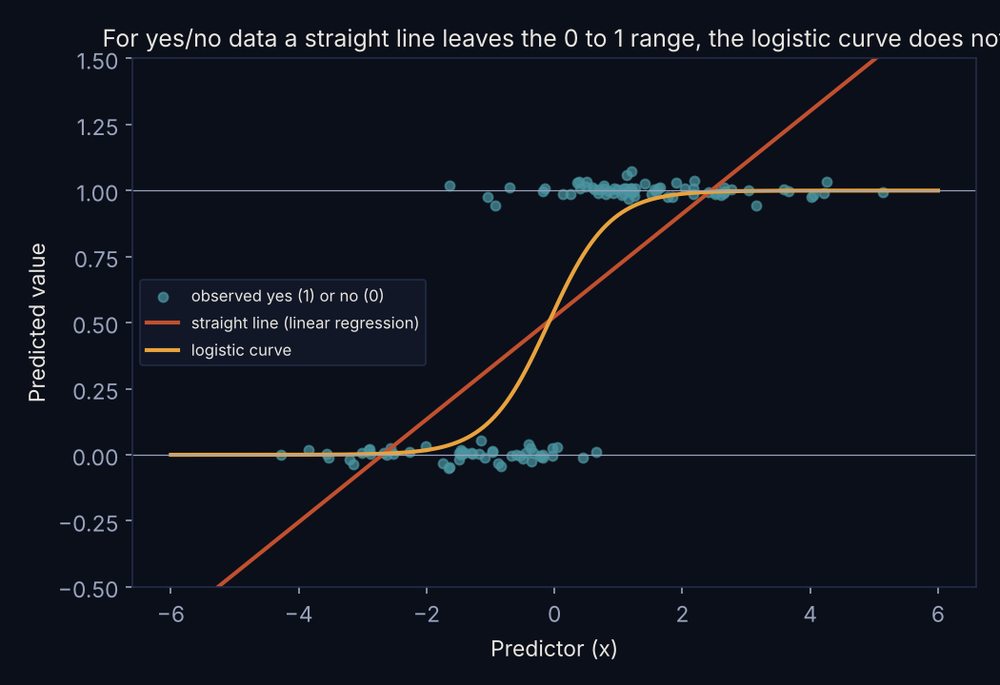
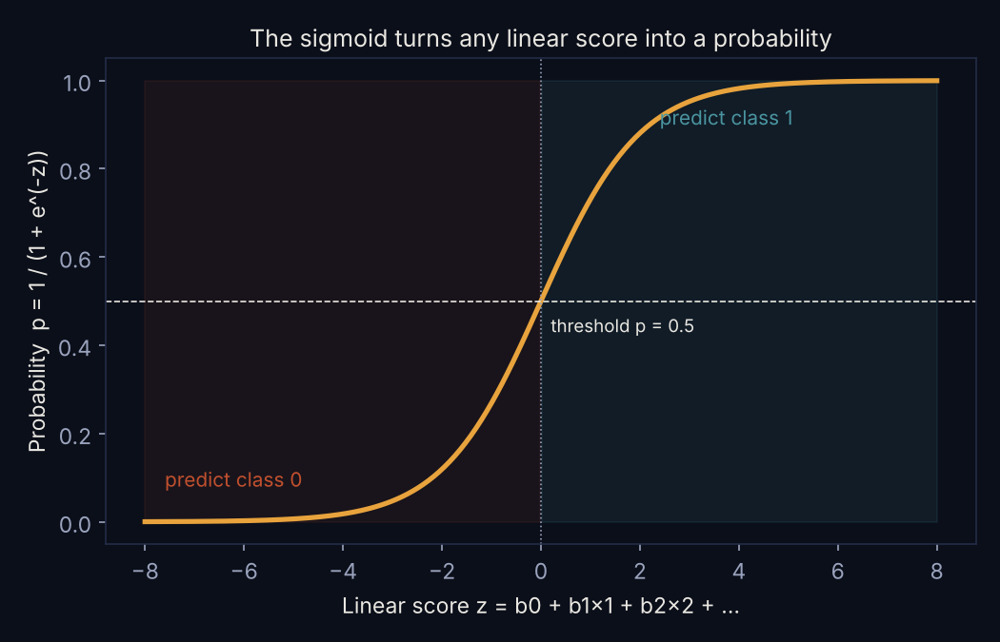
The two methods also differ in what their coefficients mean. In linear regression a coefficient is a change in the predicted number. In logistic regression the linear score is the log of the odds, ln(p / (1 - p)), so a coefficient b means the odds are multiplied by eb for each one-unit increase in that predictor. Logistic regression is fitted by maximizing the likelihood of the observed labels, not by minimizing squared error. Both assume the relationship is a straight line after transformation, which is a real limit: a habitable window in temperature, neither too hot nor too cold, cannot be written as a single straight-line effect.
Data Prep
Regression uses the same labeled data and the same split as Naive Bayes and Decision Trees: 5,047 planets divided at random into a training set of 3,532 planets (46 habitable) and a testing set of 1,515 planets (20 habitable), with no planet in both. The sets must be disjoint so that the scores describe planets the model never saw. For linear regression the target is a number, planet mass (pl_bmasse), and the predictors are the other seven measurements: orbital period, radius, equilibrium temperature, host star temperature, host star radius, host star mass, and system distance. All were log-transformed, since they span several orders of magnitude and mass against radius is close to a straight line on log-log axes. For logistic regression the label is habitable, 0 or 1, and the predictors are all eight measurements, log-transformed and then standardized with a scaler fit on the training set only, so that coefficients are comparable.
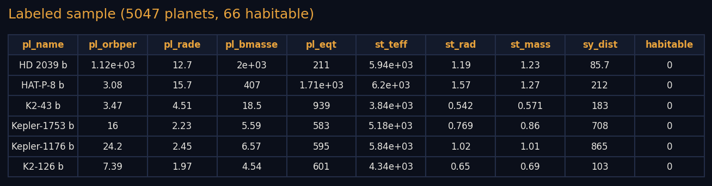
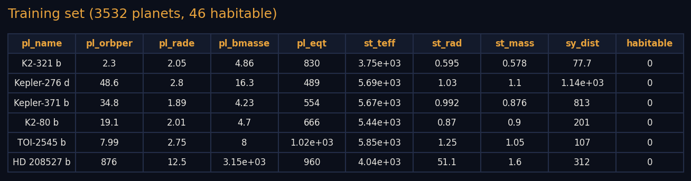
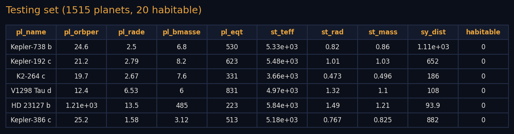
One property of the data matters here. 2,550 of the training planets and 1,133 of the testing planets have a mass and radius within 1% of a published mass-radius formula, which suggests one of the two values was estimated from the other and not measured. Results below are therefore reported for all planets and also for the planets that are off that curve. Data files: labeled_sample.csv, train_set.csv, and test_set.csv.
Code
Data split: prep_train_test.py. Linear and logistic regression: regression.py. Both are written in Python and use pandas, scikit-learn, and matplotlib.
Results
Linear regression, fitted on all training planets, predicts log10 mass on the testing set with an RMSE of 0.395, an MAE of 0.240, and an R2 of 0.84. In plain terms the typical error is a factor of about 2.5 (RMSE) or 1.7 (MAE) in mass, compared with an RMSE of 1.00 for always guessing the training average. That headline number is flattered by the formula-based planets. On the 1,133 testing planets that sit on the mass-radius curve the R2 is 0.93, because for them mass is nearly a formula of radius, while on the other 382 planets it falls to 0.53. A second model trained and tested only on planets off the curve (982 training and 382 testing planets) reaches an R2 of 0.62, an RMSE of 0.576, and an MAE of 0.408, a typical error of a factor of about 3.8 (RMSE) or 2.6 (MAE), against a baseline RMSE of 0.94. That is the fairer measure of predicting a mass that was actually measured.
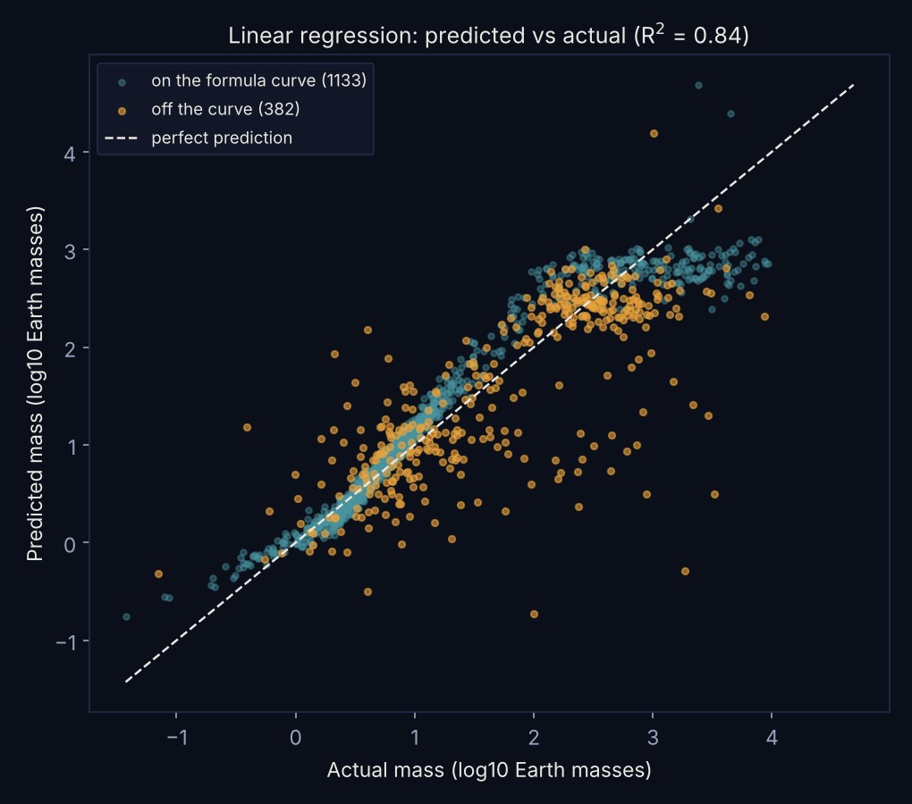
Two coefficients can be read in plain words. The radius coefficient is 2.09 in the all-planets model, so doubling a planet's radius multiplies its predicted mass by about 4.3 (2 raised to the power 2.09) with the other measurements held fixed. In the model on measured planets it is 1.68, a factor of about 3.2 per doubling. The orbital period coefficient is 0.29 (0.35 in the measured-only model), so doubling the period raises the predicted mass by about 22% (27%). The temperature and host star coefficients should not be read this way, because they change a great deal between the two models: those measurements move together, which makes their individual effects unstable.
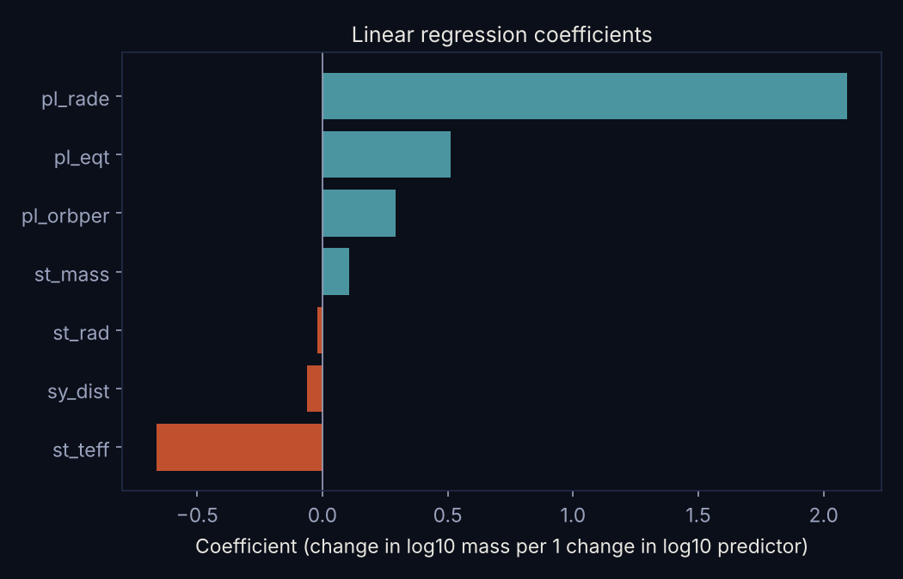
Logistic regression was fitted two ways, because the habitable class is so rare. With default settings it reached 98.9% accuracy on the testing set, above the 98.7% of always guessing not habitable, found 6 of the 20 habitable planets, and raised 2 false alarms, so 75% of its flags were correct. With balanced class weights it found all 20 habitable planets, but accuracy fell to 94.9% because it raised 78 false alarms, so about 20% of its flags were correct. For the odds, take the default model's radius coefficient of -2.16 on the standardized scale: a planet one standard deviation larger in log radius has its odds of being habitable multiplied by e-2.16, about 0.11, so roughly nine times lower, with the other measurements fixed. The orbital period coefficient of +1.62 multiplies the odds by about 5.1 per standard deviation.
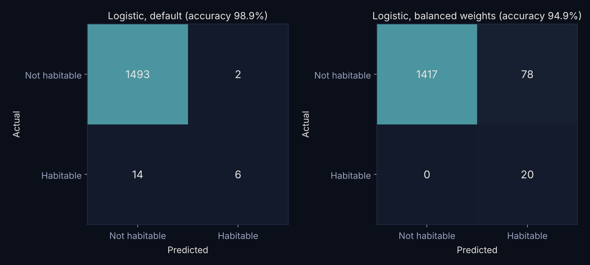
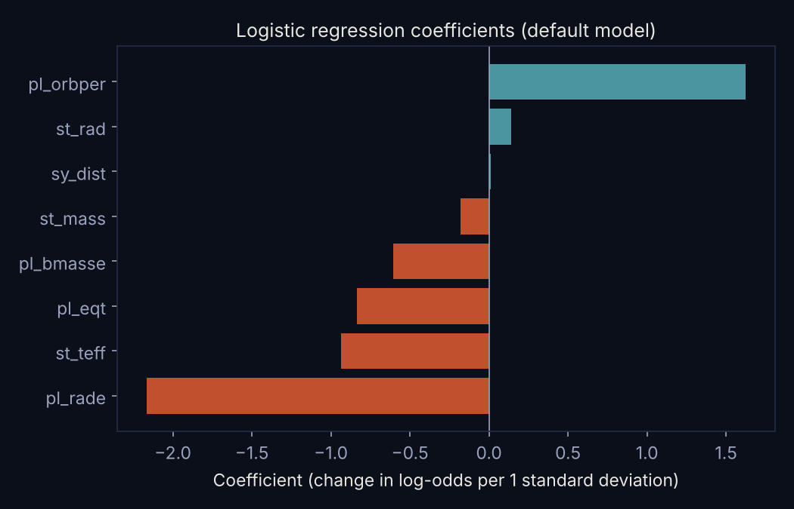
Compared with Naive Bayes on the same 1,515 testing planets, logistic regression does better on both counts. Naive Bayes with a learned prior never predicted habitable (98.7%, none found), and with equal priors it found 19 of 20 but raised 253 false alarms (83.2% accuracy, 7% of flags correct). Default logistic regression has higher accuracy than either Naive Bayes model, and balanced logistic regression found all 20 with 78 false alarms, about three times fewer false alarms than Naive Bayes needed for one fewer planet found. A likely reason, not tested here, is that logistic regression weighs the correlated measurements together, while Naive Bayes treats each as independent evidence.
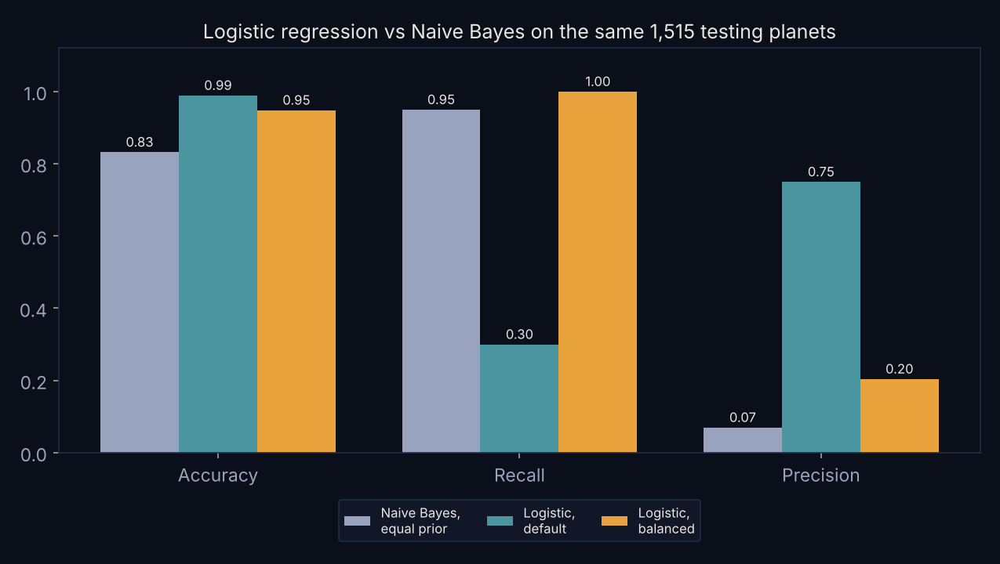
Conclusions
Mass can be estimated from a planet's other measurements, but the estimate is much rougher than the headline score suggests. Across all planets the typical error is about a factor of 2.5, yet much of that accuracy comes from the archive having already filled in many masses from a radius formula, and for planets where mass was measured the typical error is nearer a factor of 4. For the central question, logistic regression is a more efficient shortlist builder than Naive Bayes. The balanced version flagged 98 of 1,515 planets and caught all 20 habitable ones, which cuts a large catalog down to a list short enough to follow up. It also carries a clear limit: a straight-line score cannot describe a habitable window in temperature, and the Part 3 trees, which can, found 18 of 20 with only 12 false alarms. Three cautions apply. All 20 habitable planets in the testing set sit on the mass-radius curve, so their masses and radii are partly estimates. With only 20 positive planets, one planet moves recall by five percentage points. And the habitable label itself is built from quantities closely related to these same measurements, so some of what the models learn is the catalog's own rule.